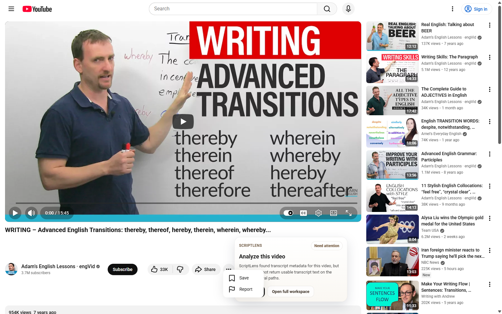
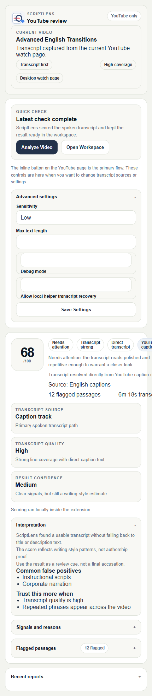
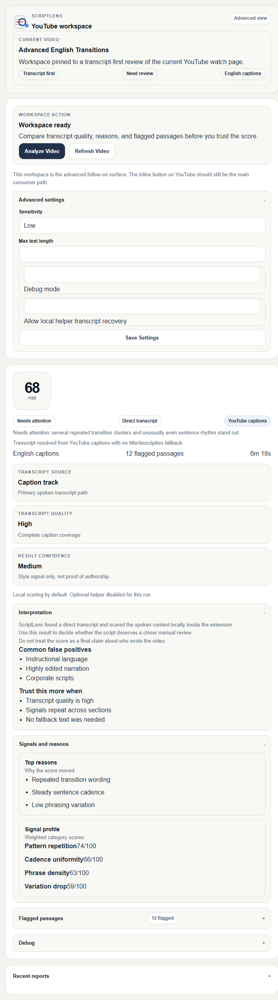

Chrome extension surfaces
- Inline watch-page button and verdict card
- Toolbar popup for quick review and state
- Side-panel workspace for detailed analysis
- Local-only public package path
A focused YouTube tool that inspects transcript text for AI-like writing patterns without pulling users into a dashboard. The main result lives on the watch page; the popup and side panel are there when the user needs the evidence trail.



Title and description fallback is not treated as a win unless the user explicitly allows it.
The store-facing detector can score on-device without a hosted recovery dependency.
Transcript quality and provenance stay visible so the score does not feel like a black box.
ScriptLens is not a mock landing page. The repo includes the extension runtime, public docs, packaging scripts, release readiness reports, store listing copy, issue templates, and Playwright coverage around the detector, backend resolver, release build, and staged QA flow.
The latest staged canary artifact records a clustered hosted-recovery failure under auth-session. The public release target stays local-only, so this is documented as a backend recovery risk instead of hidden behind green marketing copy.
https://www.youtube.com/watch is the intended product lane.
The release is intentionally narrow so the transcript path can be tested hard.
storage, sidePanel, and YouTube host access
Recovery-enabled builds add a fixed backend host permission when packaged for that mode.